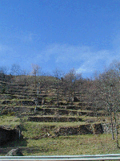
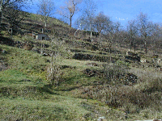
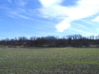
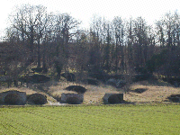

|

|
L'Auvergne a toujours été un pays
viticole et tous les flancs sud des collines, à basse
altitude, étaient plantés de vignes
installées sur des "pailhats", des terrasses retenues
pas des murettes de pierres sèches comme le chante
Jean Ferrat...
Le vin auvergnat ne jouit pas de la même
réputation que nos grands crus nationaux, mais il a
ses amateurs et il fut très apprécié
quand le phylloxéra avait détruit les
vignobles réputés.
|
|
Cette maladie n'est arrivée chez nous que
quelques années après que Bordelais et
Bourgogne soient atteints, ce qui avait enrichi nos petits
producteurs. Quand nos vignes furent frappées
à leur tour, au début du XIX ème
siècle, beaucoup abandonnèrent et les
terrasses restèrent en friche.
Elles ont été récemment
dégagées à Champeix, près de la
route qui nous amène de Clermont.
|

|
|

Le site des 140 caves vu de la route qui vient de
Montaigut. Nous sommes en février, le soleil n'est
pas assez haut, mais en été les arbres cachent
tout...
|
Ce vin était conservé dans des
caves, souvent en sous sol des maisons, ou sous les vignes
mêmes, comme à Châteaugay ou
Aubière mais à St Julien elles étaient
toutes rassemblées au flanc nord d'une colline de
tuf, facile à creuser.

|

|

|